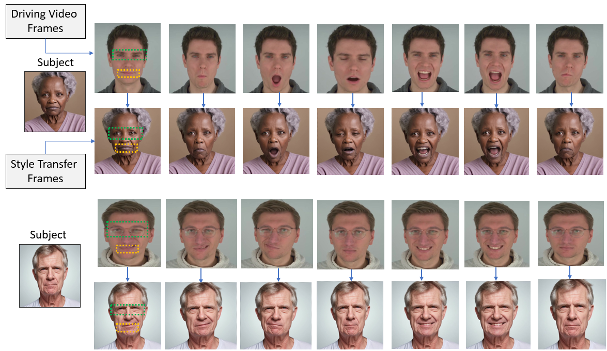

Results
Video retargetting pipeline is integrated to synthesize high level facial expression and headpose animations.


SynAdult is a scalable, multimodal data generation framework designed to create synthetic adult face datasets for biometric and computer vision research. This project integrates cutting-edge diffusion models, neuromorphic event simulators, 2D–3D face morphing, and a video retargeting pipeline to produce realistic facial expressions and head pose animations. The dataset spans multiple modalities—RGB, event streams, 3D data and includes diverse demographic coverage (Asian, African, and White ethnicities). We provide rigorous validation using KID, BRISQUE, identity similarity, and CLIP scores. Our open-source release supports research in face recognition, expression analysis, and fairness-aware AI by offering high-fidelity, ethically curated synthetic data.
The work is submitted in IEEE Access Journal.
Video retargetting pipeline is integrated to synthesize high level facial expression and headpose animations.
We generated 3D face texture from single 2D frames using a monocular reconstruction approach. This additional data modality enhances the dataset by providing realistic 3D geometry aligned with RGB samples, enabling downstream tasks like pose estimation, expression transfer, and identity-preserving animation.
@ARTICLE{farooq2025synadult,
title={SynAdult: Multimodal Synthetic Adult Dataset Generation via Diffusion Models and Neuromorphic Event Simulation for Critical Biometric Applications},
author={Farooq, Muhammad Ali and Paul Kielty and Yao, Wang and Corcoran, Peter},
journal={arXiv preprint arXiv:2406.11592},
year={2024},
volume={},
number={},
pages={},
doi={}}